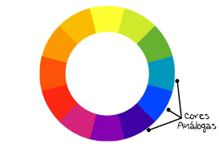

As cores complementares são cores que tem mais contraste entre si, por exemplo:
violeta e amarelo, são cores que estão opostas umas das outras.
Verde e Vermelho
Azul e laranja.
Cores que estão opostas umas das outras.
Cores Análogas são cores que combinam umas com as outras, ao contrario das cores complementares elas não tem contrastes mas que são perceptiveis umas com as outras tendo uma harmonia entre elas.
Nas cores análogas pegamos as cores vizinhas, por exemplo:
Por exemplo:
Análogas:
azul/verde/amarelo
pegue a cor que faça contraste com o verde --> Vermelho
As cores intercalas tem um contraste maior entre elas. Pulando uma em uma.
Na escolha triádica escolhemos a cor baseada em um triângulo.
Nas cores quadraticas escolhemosuma e pulamos de 2 em 2, até conseguir formar um quadrado

Escolhemos apenas uma cor, apenas mudamos a saturação e a iluminosidade dela.